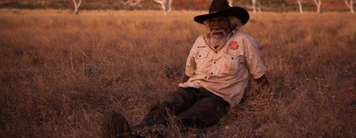
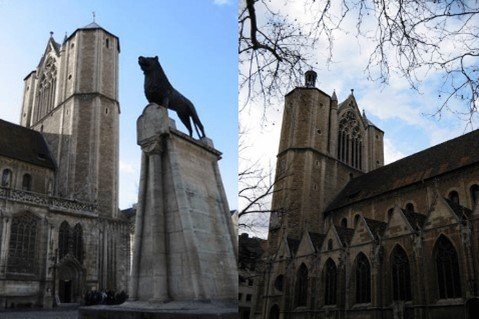
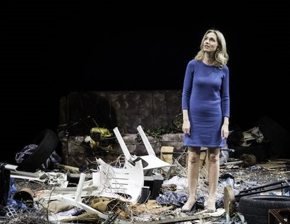
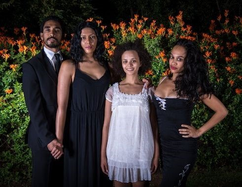
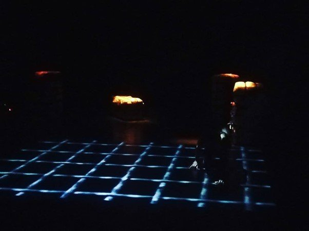

In the summer of 2018, two members of Mada Masr's staff were invited to participate in Festival Theaterformen 2018, taking place in the city of Brunswick, Germany, as part of the Watch and Write program. The program, a first of its kind in the festival, invited 12 writers and cultural journalists from eight different countries all over Africa to attend the event, discuss their individual practices and watch and write about the program, the focus of which, for this edition, was Africa. This piece is a reflection on that experience.

Lynette Wallworth, Collisions, virtual reality installation

Brunswick, Germany, photo by Ismail Fayed
Originally published in Mada Masr on 9 September 2018
By Ismail Fayed
I knew I was in a historical place, somewhere antiquated, probably dating back to the 12th century or so. It felt quite medieval and, at night, I could almost imagine monks in habits walking from one end of the cathedral next door, to the other. I would later discover that the building I was in is Burg Dankwarderode (Dankwarderode Castle), the seat of power for the rulers of the city and the residence of its founder Henry the Lion. Just a few yards across, in the square, was the prominent statue of a roaring lion, cast in bronze and guarding the castle (now the Herzog Anton Ulrich Museum).
I would pass by that lion everyday as I crossed the square to get to my hotel. Sometimes it felt like a relic from a time so removed from the present, while at other times it seemed to blend right in with my thoughts. I was reading the Brothers Grimm's Fairy Tales, and the castle, the lion and the cathedral made their way in and out of my reveries as I read along and walked almost daily from one theater to the other and then to the hotel and back again. Here, the productions, the history, the tales and the politics of Europe and back home manifested themselves in the below reflections.
Dornröschen or: How Milo Rau will wake the slumbering white princess
I have always wondered why no one has ever made a remake of Marina Abramović's classic 1975 performance "Art Must Be Beautiful, Artist Must be Beautiful," where, instead of combing their hair, the performers would march on a public square while screaming: "Art must be political, artist must be political." The moral imperative to associate art with a particular aesthetic conception or pleasure, critiqued by Abramović, seemed to have shifted to the domain of "performing the political." And this is precisely where German director Milo Rau's theatrical piece, Mitleid. Die Geschichte des Maschinengewehrs (Compassion, The History of a Machine Gun, 2016) falls. The performance is an hour and forty five minutes of extraordinary theater technique (manifested in the formidable acting talents of actors Ursina Lardi and Consolate Sipérius), and a lot of infantile nihilism, the kind only a white man living in Europe could come up with.
Conceived as an acerbic critique of white guilt, war relief, international aid and the NGOization of political dissent and opposition, Rau's piece fails on every account for a non-white audience, aside from its exceptional performances. It was torturous to watch and a torturous to engage with. Everything about the piece reeked of puerility, making it an all-around failed attempt at irony. But it spoke volumes about the conscience of Europe. A Europe that doesn't mind selling weapons to warlords in some African country, to prolong civil wars only to ensure its access to precious resources on the continent. And a Europe that doesn't seem to have any moral qualms about electing parties who run solely on platforms of xenophobia, Islamophobia and pure unadulterated Nazism. And yet it's a Europe that has also emerged from two world wars with attempts at a universal acknowledgment of a human's worth; an assumption that can be little disputed but whose processes and mechanisms can undoubtedly be critiqued. And this is where Compassion, The History of a Machine Gun comes in. In his attempt to poke holes in Europe's humanitarian culture and work, Rau has effectively suggested that there is nothing else left for Europe to do but sell guns.
Humanitarian work done by Europeans is bad because the aid workers are corrupt, driven solely by their white guilt savior complexes and, in most cases, they are just as exploitative as the warlords they fight against. True. But then what is left of Europe?
Nothing. Nothing but the rise of right-wing extremists and brilliant white actors peeing on stage (a key scene in Rau's piece).

Milo Rau, Compassion, The History of a Machine Gun, 2016
Der Gevatter Tod or: Behold how I become the destroyer of the worlds
In the tale of Godfather Death, Death takes pity on a poor man and becomes the godfather of his son, raising the child as his own and eventually giving him an elixir for his own use, which can undo death itself, the only proviso being that if Death claims a person, the young man cannot heal them. One day the young man summons up the courage to defy death and tries to trick him, saving a beautiful young woman. For this, Death claims his soul.
In 1945, J. Robert Oppenheimer, the wartime head of the Los Alamos Laboratory, known as the "father of the atomic bomb," cited the Bhagavad Gita in a famous interview (chapter 11:32): "I am become death, the destroyer of worlds." He refers to when Ajurna, the reluctant soldier and protagonist of the Gita, requests to see the divine form of the Lord Krishna, and as Krishna reveals his divine form, he declares that he is the all consuming Time (Oppenheimer translates the original Sanskrit word as 'death'), annihilating all being, since all that lives must with Time perish. Similarly, Oppenheimer — being part of the Manhattan Project — tricks death and annihilates all being. For the rest of his life, he would try to atone for his brush with the powers of Death, but it would be too late.
In Curtis Taylor and Lynette Wallworth's virtual reality piece Collisions (2016), an indigenous Australian man, Nyarri Morgan, recounts his experience witnessing the British nuclear testing in the Western Desert in Australia during the 50s and 60s, and the devastation that the testing caused to the environment and native land. The massive explosion was perceived as a divine apparition while the instant death of all life around the site, including many game animals, made Morgan believe that the dead animals were offerings from the gods. Naturally, the entire indigenous population surrounding the testing sites fell immediately sick and suffered long-term consequences as a result of the testing.
It would take the Australian government more than four decades to acknowledge the extent of damage the testing had on the environment and on the lives of the indigenous population. Yet for many, the experience of witnessing the testing resembled ancient creation tales; cosmic events that have an everlasting impact. Wallworth's and Taylor's piece brilliantly moves between those different notions of birth and destruction (for example we see Nyarri setting ablaze whole sections of vegetation in an attempt to mitigate the impact of forest fires), and the kind of impact they have. The work not only tries to show that indigenous peoples are not alien to the centrality of death or destruction, but it examines how, sometimes, the effects of destruction can be considered crucial for rebirth and regeneration, as opposed to total annihilation, as in the case of Oppenheimer's bomb.

Lynette Wallworth, Collisions, 2016, virtual reality experience detail
The Singing Bone or: Die Schuld des Kolonialismus
What if the bones of those who were unjustly killed could sing their truth once unearthed?
In Jade Bowers' adaptation of Mary Watson's short story Jungfrau (2006), which premiered at the festival, we are shown the consequences of attempts to bury decades of oppression and self-hate, and the violence of living under apartheid and settler colonialism in South Africa.
Staged against a makeshift domestic setting and physically entangling the actors and the audience within its narrative with the use of endless weaved fabric, the story hovers between a neurotic avoidance of the effect of violence and a hyperbolic manifestation of it. There are layers upon layers of history condensed in that space: colorism, gender discrimination, domestic violence, incest, economic inequality, exploitation of people of color, and the list goes on. The more violent the apartheid system was towards all non-whites, the more pressure it placed on all these communities, straining existing resources and creating inter-community hostilities, and even hostilities within the same communities.
These racial tensions, enshrined by the apartheid state and still casting their shadows today, unfold throughout the performance. At points they create an atmosphere of yearning, playfulness and intimacy, and at other points sudden outbursts of anger, confusion or sorrow. And while the piece favored a certain economy in the use of text, it relied on a much-needed use of movement — a proto-choreographic score that helped emphasize what happens when these bodies, laden with such conflicted experiences, start to move — for it is in movement that bodies reveal what language fails to manifest.
Yet there was something nascent, almost naïve about the work. Maybe these histories need to be brought to the light; revealed and acknowledged rather than letting them smoulder under the weight of guilt, fear and oppression.
The burden of this history should not be on the non-whites. It is the debt and schuld (responsibility) of the whites, and it's their turn to carry it.

Jade Bowers, Jungfrau, adaptation of Mary Watson's short story
Die Zertanzten Schuhe or: How Janeth Mulapha saved contemporary dance
As a child, Al-Rafiq al-Majhul (The Unknown Companion) was one of my favourite Grimm tales to be adapted into Arabic. In the Grimm's original version it was not one princess who was tricked by a sorcerer, but 12 princesses who were lured by the wicked princes and enchanted to dance all night until their shoes were completely worn off. The idea of compulsive dancing might even go back to the 16th century in Germany and perhaps holds a more radical political proposition than meets the eye: Women dancing when they shouldn't, where they shouldn't and with whom they shouldn't. The 12 princess were radical indeed.
In Janeth Mulapha's Let's Talk (I Won't Complain), commissioned especially for the festival (as part of the residency program and presented as part of the 3×30 triple-bill dance presentation of works-in-progress, the radical potential of a woman dancing is abundantly clear.
The piece is a 30-minute solo meditation on the life of Mozambique's feminist icon Josina Machel (1945-1971) and what remains of her legacy in current everyday life in Mozambique. Mulapha wears no dancing shoes, and uses large plastic sacks with square patterns filled with with what look like blankets or clothes, to create an elaborate scenography of barriers and hurdles. She brilliantly uses the square patterns as a projected map on the floor and starts to move along them, creating a visual parallel between the objects women carry and their daily physical labour carrying them.
It's not just Mulapha's formalistic rigor that is mesmerizing, but also the fact her performance is deeply rooted in a vernacular very much of her context and very much her own. It is almost impossible to create a "feminist" piece without falling into the clichés and rhetorical language games that remain abstract rather than embodied. But to bring that tension, that weight; the barriers that a body encounters — physically and metaphorically — to the stage without necessarily "citing" any self-confessed ideological or political symbolism is nothing short of ingenious.
Mulapha reminds us of the crucial poetics of dance, poiesis: creating out of diverse materials what was not there before, or what was not seen before. And, in an imaginative process, she managed to unravel decades of struggle for women in Mozambique, allowing us to imagine their daily toil as they carry the weight of history, prejudice and discrimination, and yet move with extraordinary adeptness and resilience nonetheless.

Janeth Mulapha, Let's Talk (I Won't Complain), dance performance